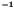
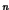

Using only finite sequences of operations as programs, as was done by Woodcock and Davies [209], avoids some of the complexity of the general theory. In particular, the combination of unbounded non-determinism and recursive programs may cause L-simulation to become unsound in a setting of total correctness. A lucid explanation of this issue is in Dijkstra's book [72]: using Dijkstra's language it is provably impossible to define the program ``set  to any natural number" such that it is guaranteed to terminate.
The most comprehensive account of the theory of simulations is given in the book by de Roever and Engelhardt [60]. This also contains theorems stating the circumstances in which upward and downward simulation are equivalent or sufficient. In addition, it contains an extensive history and bibliography of the area.
The ``contract" approach to partial operations in Z is the traditional one; Josephs [135] used the behavioural approach in specifying reactive systems in Z. Strulo [197] describes the ``firing condition" approach, which differs from the behavioural approach described here by viewing an unconstrained operation as divergent. The language B [2] has both explicit guards and preconditions. Versions of Z with explicit guards added have been explored by Fischer [85] and Miarka et al [158].
The totalisation of partial relations and subsequent derivation of simulation rules for partial relations is strongly inspired by the explanation by Woodcock and Davies [209]. Their book only contains the totalisation necessary for the ``contract" approach to ADTs. In a paper with Bolton [25] they also defined totalisation and derived simulations in the behavioural approach.
A dual approach to totalisation is taken by de Roever and Engelhardt who consider the consequences of restricting refinement to total relations of a particular shape, viz. those which (we would say) represent totalised relations.